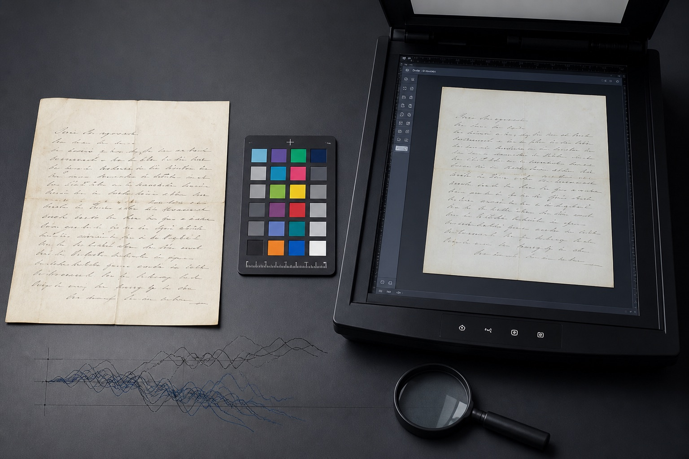

笔迹鉴定对比材料怎么准备？原件、扫描件与自然样本说明
笔迹鉴定能观察到多少信息，首先取决于材料本身。原件、扫描件、复印件和聊天截图保留的细节不同，不能用同一种方式看待。整理资料时，先说明每份文件的来源和形成时间，比一开始只截取几个相同字更重要。

待分析文件与对比样本要分开
待分析文件是需要查看的目标材料，对比样本则是平时自然形成的书写内容。两类文件应放在不同文件夹，并在名称中标明日期、页码和来源。笔迹鉴定过程中若混淆两组材料，会直接影响后续对应与记录。
原件、扫描件和复印件有什么差别
原件通常能保留墨色、压痕和线条交接等细节；扫描件的可观察程度与分辨率、颜色模式有关；复印件可能丢失浅色笔画，聊天截图还会经过压缩。只有图片时可以先查看形态特征，但应如实标注文件类型。
自然对比样本怎样选择
对比样本应尽量与待分析文件形成时间接近，并且来自日常自然书写。会议记录、便笺、签批和连续文字都可以分类整理。只准备临时抄写的一页字，容易受到刻意控制速度的影响，不能充分反映平时习惯。
为什么不能只比较一个相同字
同一个字在不同位置、速度和组合中会自然变化。笔迹鉴定通常要结合多个相同字，同时观察起收笔、笔画顺序、连笔、倾斜、大小比例和整体布局。相同字数量越充足，越容易区分稳定特征与偶然变化。
拍摄和命名怎样减少信息损失
拍摄时保持纸面平整、光线均匀，先保存整页原图，再补充重点局部。不要使用滤镜或反复转存。文件名可采用“日期—文件类型—页码”，并另做一份简短清单，写明哪些是原件、哪些只有复印件。
四类关键词之间有什么联系
模仿笔迹关注连续文字与整体书写习惯，模仿签名和模仿签字更重视固定文字中的连笔、速度和结构变化，笔迹鉴定则需要把待分析文件与自然对比样本分开观察。理解这些差别，才能按具体需求准备合适材料，而不是把所有图片混在一起。
常见问题
笔迹鉴定资料只有手机照片可以先看吗？
可以先查看，但照片应保留完整页面、光线均匀且未经压缩；找到更清楚的扫描件或原件后再补充。
不同时间形成的样本可以放在一起吗？
可以同时提供，但应先按时间分组，并明确主要参考时期，避免不同阶段的书写变化相互混淆。
样本越多越好吗？
数量重要，分类和清晰度同样重要。多份来源明确、自然形成且内容可比较的样本更有参考价值。